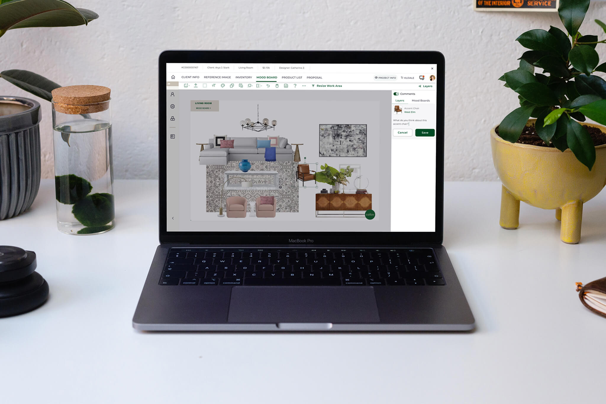
Collov is a tech-enabled interior design company reimagining the way you make your house into a home. In a nutshell, this is how you would experience our service as a customer:
Customers take a style quiz, fill out questionnaire, submit payment.
Our interior designer produces design options for you.
You can shop directly on our website from 200+ brands.
You approve a design, we finish with 3D renderings.
When I joined the one-year-old company, the startup had already a very elaborate and complex design service project cycle in place. The founders’ dream is to create an AI and big-data powered digital ecosystem to streamline design, client communication, and project tracking.
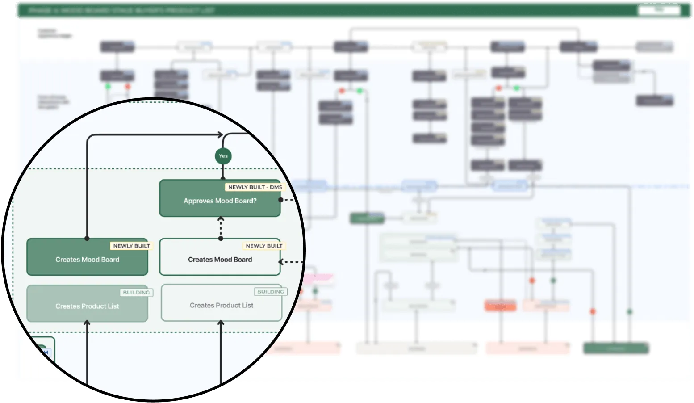
A service blueprint I created with my team mate tracing the end-to-end interior design project cycle, from project intake (starting top left) to order and fulfillment (ending top right). This project is about an internal tool used by designers right after project intake.
This case study is about how we optimized the mood board and product list creation process on the internal tool. Without the internal tool, the team relied on a host of third-party platforms and softwares to run operations, from Adobe to G-Suite to Asana. This would be a problem if the company has to eventually onboard dozens or hundreds of designers.
First, I’ll step back to show you how we went on a “rescue mission” to bring the product up to a baseline standard, which serves to give you context. Then, I’ll explain how a tricky problem surfaced and zoom in to show you how I tackled that problem.
The interior design team told us that they were creating design proposals on Photoshop and Google Sheets simultaneously. They complained that the internal tool was clunky and inconvenient. And so based on their requirements, we started a major optimization effort.
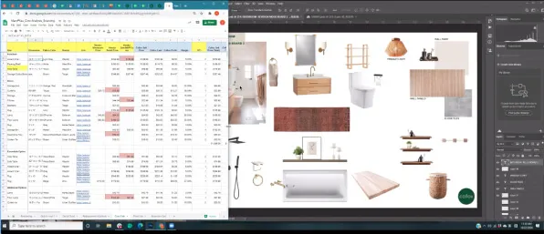
Interior designers relied on 3rd party platforms and software programs to create design proposals in October 2020.
Interior designers embraced remove.bg and Google Slides as they were both quick, reliable, and convenient. Our internal platform was up for some competition.
Meanwhile, the internal tool was still in the build. The product development was simply not moving fast enough to catch on with the pace of change.
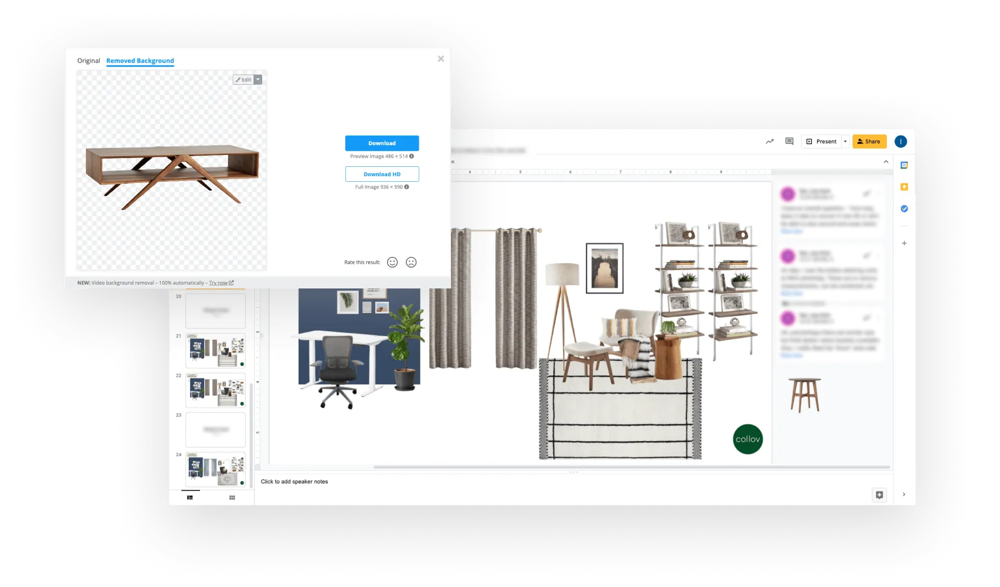
Only three months after we last spoke, we the product development team accidentally learned that the interior design team had already changed their choice of tools, which they believed to be more efficient.
After months of product development, no one was using the internal platform we were building. In the mean time, the product team had been shipping features nonstop for almost a year. Yet, we realized that interior designers struggled to create a basic mood board on the existing platform. The tool was extremely buggy, and the features had become irrelevant to their workflow.
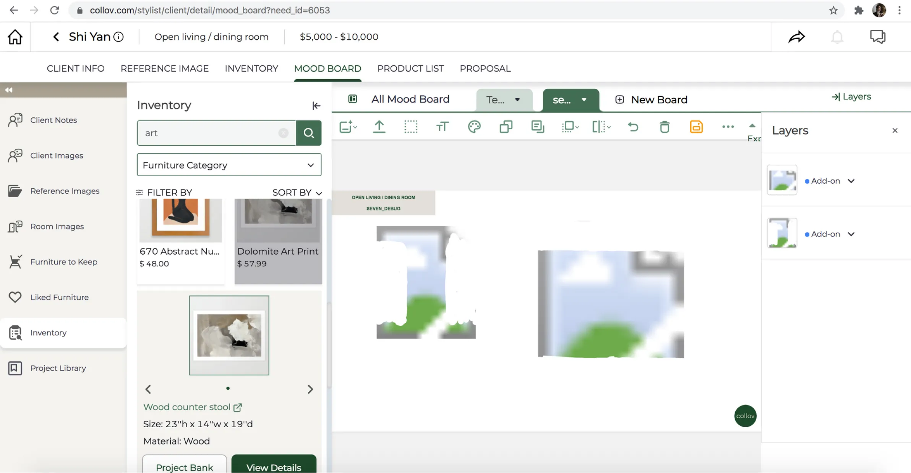
Meanwhile, Collov’s internal tool—which was designed to replace all those third-party platforms that our interior designers were using—was completely unusable, plagued by bugs and poor usability.
We’ve learned that even though the product design team did do their discovery research, the findings became outdated before the digital product was delivered. We were going in a direction that was no longer relevant.
This realization changed our product development process for good. I spearheaded an agile workflow that empowered the product team to ship small, observe user reaction, and iterate. The method also made feature releases much more predictable and stablized our roadmap tremendously.
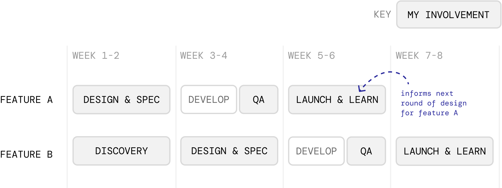
In a series of interviews, we asked designers to show us how they currently worked using the tools of their choice, and what it would look like if they tried to accomplish the same goals on using the internal platform our team built.
Subsequently, we compiled a list of problems to fix. As a team, we split up the ownership and tackled each issue one by one in order of priority.
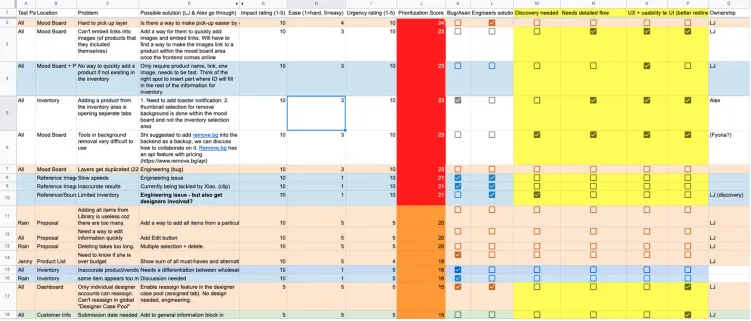
We gathered up to 80 diagnosed usability and tech issues, and we tackled them one by one.
After multiple follow-ups and iterations, our interior designers were finally able to make beautiful designs like the one below. Interior designers started to feel much better about working within the internal tool, and they were able to fully migrate their work into the platform.
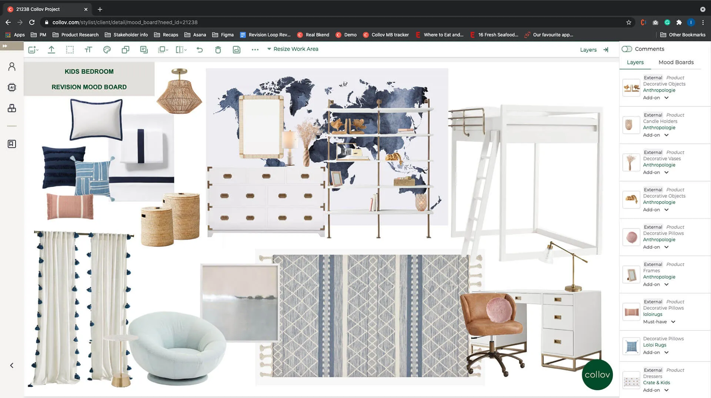
After numerous iterative cycles, we started to a see drastic improvement on the quality of the platform. Designers were now able to make beautiful mood boards like this.
We relentlessly followed up with users—not once, but multiple times until they were fully satisfied.
Over the course of 2 months, we kept shipping new features based on learnings, and continued to follow up with usability tests and interviews to stay close to real action.
Every interview ended with a question: “On a scale of 1-10, how would you rate the experience of X?” This gave us a clear idea of where we should continue to focus our efforts.
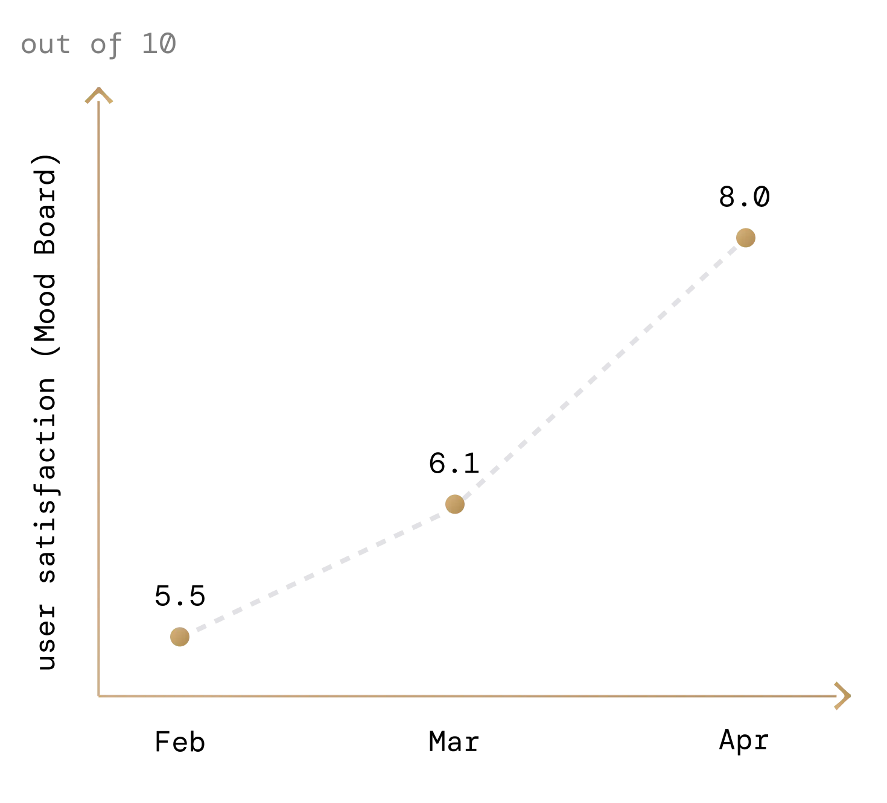
By talking to our users, we learned that designers were most excited about the in-platform Product List feature, which autogenerates the spreadsheet containing all the mood board products and their data. The feature could potentially save them a ton of time, if done right.
The problem was, this feature was only useful if designers used clean, internal product data on the mood boards, which was not the case since both the internal search function and the product database weren’t ready. Instead, designers were attaching external image clips to be fast.
During a usability test, a junior designer got agitated. “If only when I paste this external clip, it becomes an internal inventory item!”
She was right on point, and we tried to experiment with a solution that would provide the ideal task flow as outlined below.
Collov aspires to be a home design company that relies on AI and big data, and indeed, many of the powerful features in the pipeline depend on usable, clean data. Unfortunately, the database was a mess, and our moodboard tool which enabled users to keep pasting new external image assets without the accompanying data encouraged the chaos.
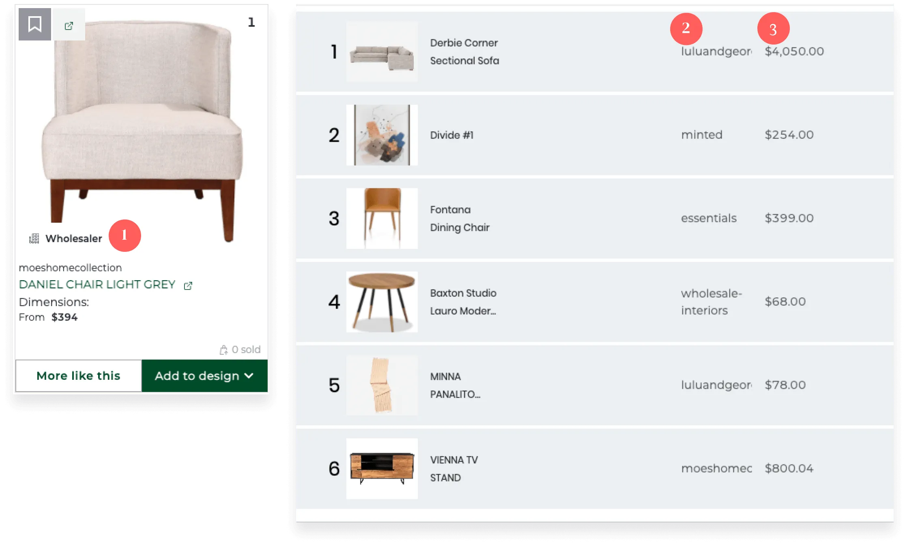
A pop-up that asks the user to pair an external clip to an existing piece of internal product data.
Our database at this point does not differentiate wholesalers from retailers, and this takes time to correct.
Vendor names were often incorrectly formatted.
There is no good way to implement real-time pricing updates, and for many retail vendors price changes are frequent.
These problems become especially difficult to correct with your database contains literally millions of items.
Messy data became a huge headache for the engineers.
Team members have to manually correct the data all the time;
A large number of products were unsearchable and hence unusable;
As it was faster for the team to upload new data using an in-house built browser plug-in, the database was rapidly piling up with duplicates.
—Lead engineer
Data cleaning requires collective effort. Still, from a product design point of view, we can design patterns that encourage users to provide comprehensive data upfront, fill in the gaps of existing product data, and recycle clean data.
The most effective way to accomplish this would be to design features that conform to their current habits.
This is everyone’s natural habit to just right-click to copy an image and tap Ctrl/Cmd+V to paste, especially when one feels rushed. So let designers do it!
In the first iteration of the product, the only way to uploading an image to the mood board was through opening up the file manager.
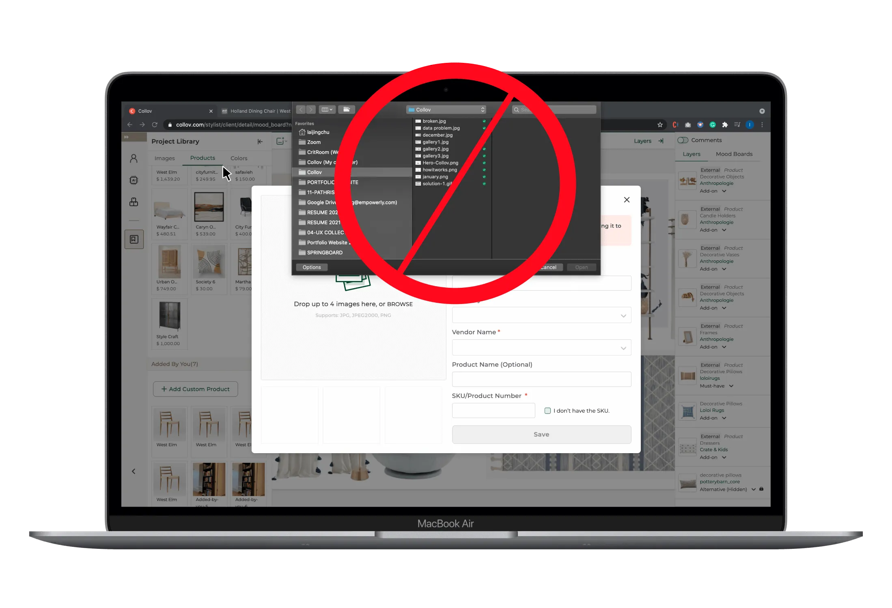
During our user interviews, we realized that when interior designers faced immense time pressure, micro-interactions and keyboard shortcuts made a world of a difference for them.
I collaborated with engineers to enable copying and pasting the fast way. For more flexibility, I also redesigned the flow to enable users to fill out the crucial product data all at once after instead of during the upload process to streamline their workflow. As seen below, by clicking on the ”Fill in info” button on the image layer (right hand side panel).
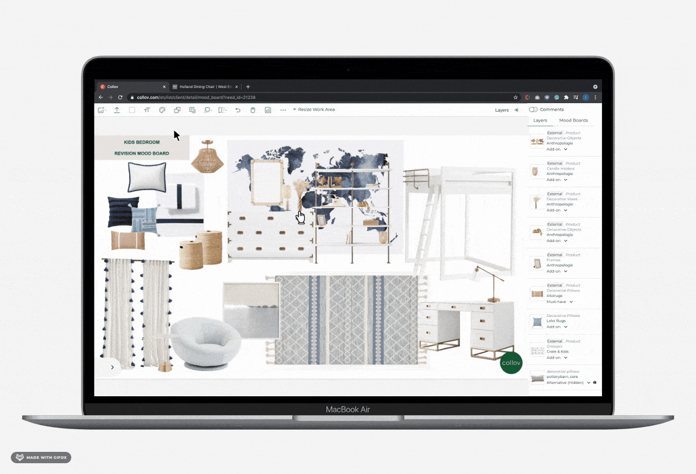
To solve the problem of duplicate data, I slipped in a prompt that asks the user if the image clip s/he is adding to the mood board matches a product that is already in the database. This way they could recycle existing data, and not have to generate a new piece of data for the same thing.
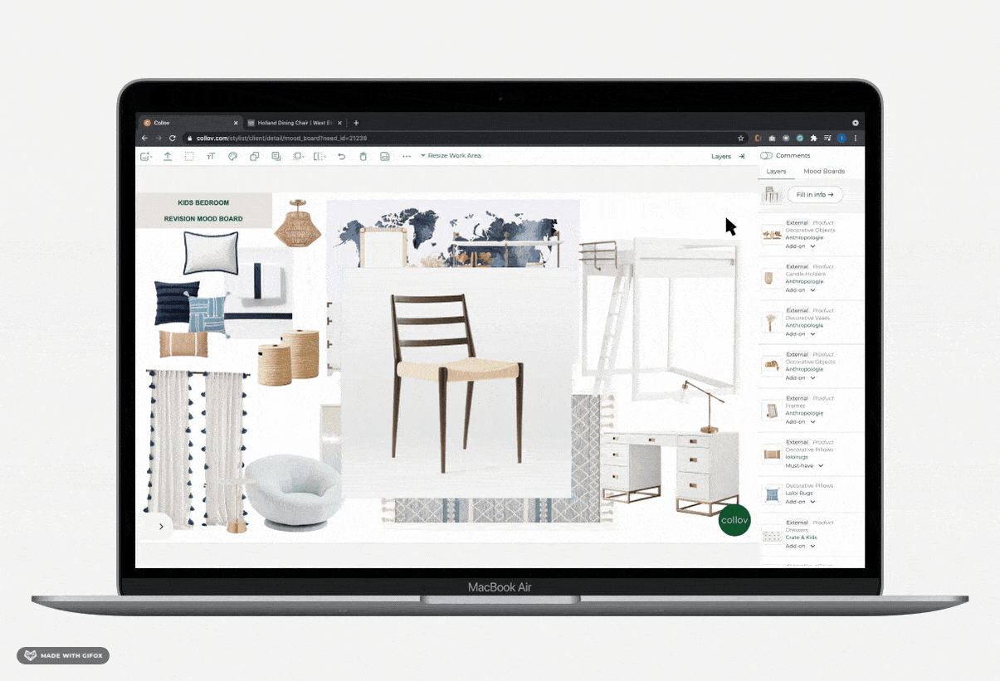
And ta-da! Now the mood board product you added has been ‘merged’ with a piece of internal data and appears on the layers list as such.
Here’s a closer look at the prompt:
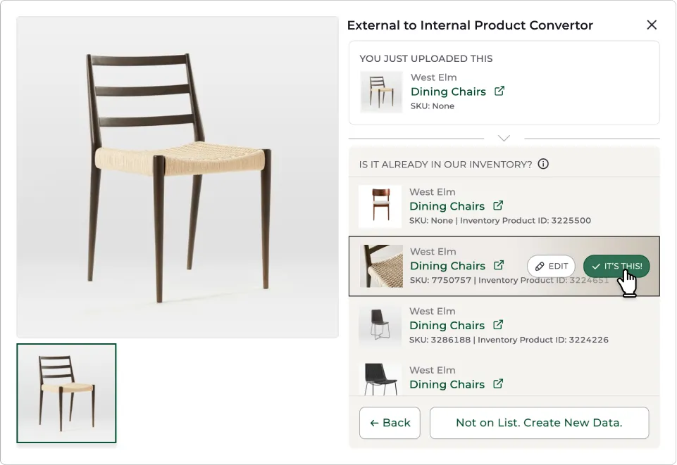
A pop-up that asks the user to pair an external clip to an existing piece of internal product data.
As the designer finishes off his/her mood board, s/he can switch over to the product list function at any time and review the autogenerated data table.
The column order of this product list mirrors that of the spreadsheet that they are used to, except it is connected to the internal database.
Designers can rapidly scan across the columns, verify and edit the information, and then hand it off to the sourcing team.
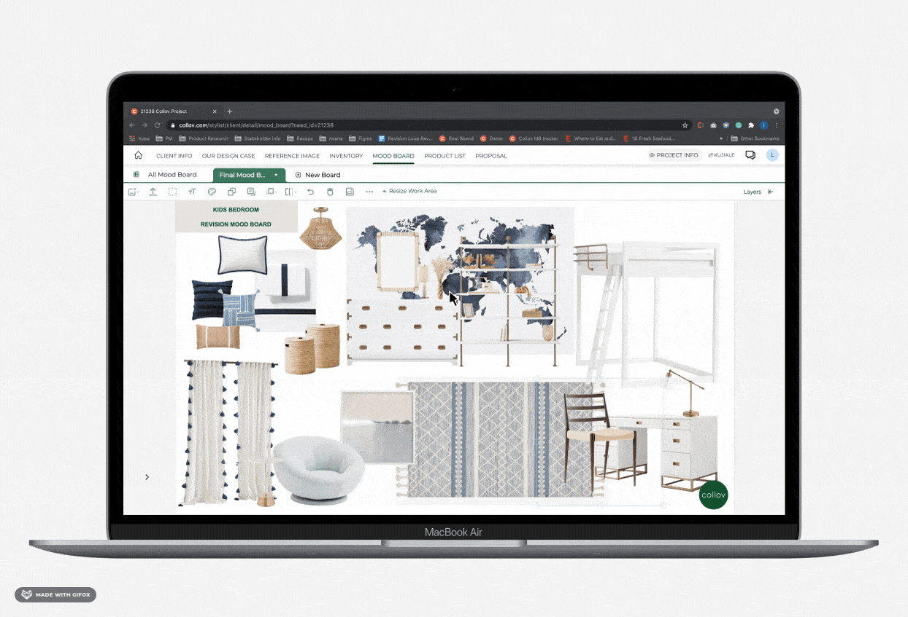
As a result of the phased feature releases described above, interior designers found it easier to add product images much faster to the mood board, take bulk action to supplement relevant data, correct data, and subsequently recycle data that had been added by themselves or other teammates. Projects became faster to execute over time, and the database also became neater over time.
Designers were able to complete their mood boards with ~95% internal inventory data to keep the database clean. A clean database is critical for most platform features to work properly.
Product list compilation time cost reduced from 4 hours to less than 1 hour per project.
Overall satisfaction rating rose to 8/10 from 5.5/10 in 3 months, and we have managed to convince our harshest critics to use our platform. More features were built upon this foundation. Today, the business solely relies on the internal tool for all its design functions, project management, and client management needs.
Stick to reality by establishing a disciplined research practice, using real data in design wireframes, and conduct usability tests on wireframes and live/demo sites.
It is important to have a thorough understanding of all the critical logic in place in order to know how every moving piece impacts each other, or else something is bound to go wrong.
This is key to staying flexible and adaptable in face of changing realities.
— Candice Suh, Interior Designer at Collov
— Jimmy Pham, Software Engineer at Collov
— Jeaninne Singh, Director of Merchandising at Collov
— Candice Lyu, Operations at Collov
— Peter "Nanxin" Zhao, Senior Product Designer at Collov


Made in Figma + Webflow by Lai Jing Chu, 2025.
Take a peek at the website style guide.